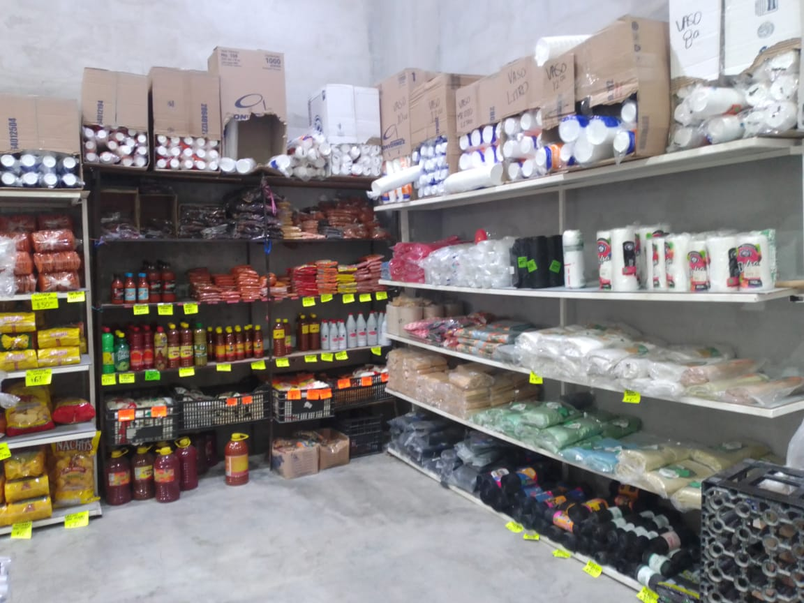
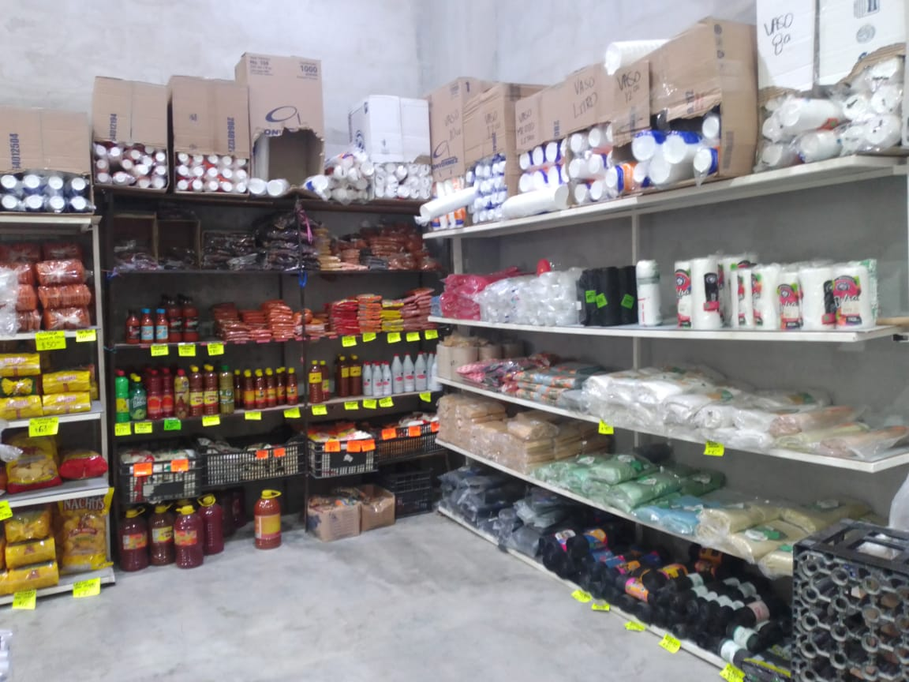

Dulceria Feliciano Martinez
Esta dulceria ofrecemos los mejores dulces, y de las mejores calidad, contamos con una gran variedad de dulces de las mejores marcas. Elaboración y venta de dulces típicos, cuidando siempre la higiene y el buen sabor, para así poder ofrecer a nuestros consumidores productos de calidad, tratando siempre de mejorar la elaboración y selección de nuestros ingredientes.
Ofrecemos al cliente una amplia gama de productos con un sabor único y especial, con el mejor servicio, calidad y precio de nuestros productos. Fabricar y comercializar dulces artesanales de la más alta calidad, elaborados con ingredientes frescos y naturales que satisfagan las expectativas de nuestros consumidores, contando para ello con un grupo de trabajo altamente capacitado que brinde a nuestros clientes productos que se caracterizan por su exquisito sabor y tradición. Somos una empresa comprometida a la elaboración y comercializar dulces con alto valor nutricional y de alta calidad para nuestros consumidores, comprometiéndonos a mejorar continuamente la calidad, productividad y rentabilidad de nuestra organización, nuestra gente y nuestros productos, con el fin de permanecer y crecer. Satisfacer el antojo de las personas mexicanas ofreciendo una gran variedad de dulces artesanales y precios accesibles dando a las familias mexicanas el placer de disfrutar un rico y sabroso dulce


 
